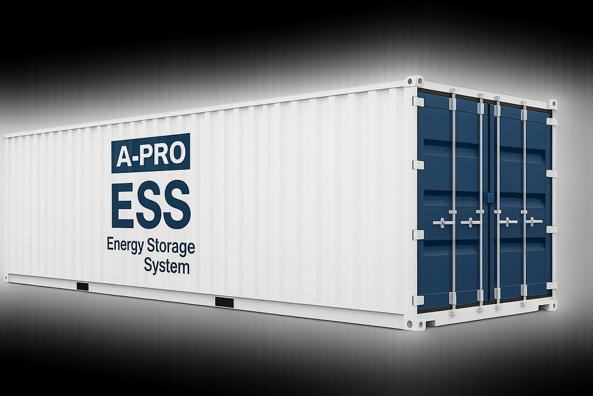

ESS
에너지의 효율적 활용을 돕는 ESS는 고객의 환경에 맞춘 최적의 규격과 다양한 배터리 셀 설계를 지원하는 맞춤형 에너지 저장 솔루션입니다.
에이프로의 ESS는 국제 안전 규격을 철저히 준수한 뛰어난 내구성과 고에너지 성능을 바탕으로, 언제 어디서나 안심하고 사용할 수 있는 탁월한 신뢰성을 보장합니다.
- 고도화된 BMS & BCP · BPU 시스템 Precision Control
- 온도 · 전압 정밀 제어 Real-time Monitoring
- 실시간 모니터링 및 데이터 분석 Data Analytics
- 운영 효율 극대화 Operating Efficiency
